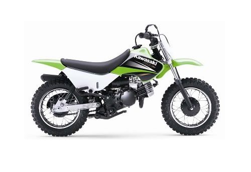
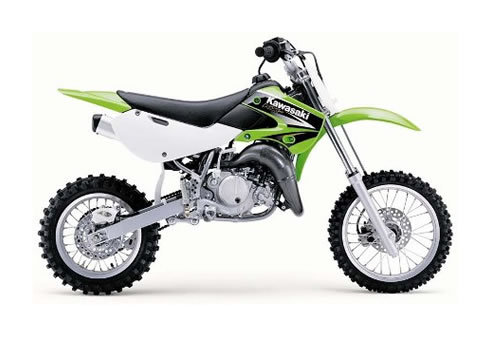
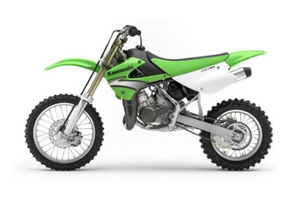

| Kawasaki KDX50 service manual repair 2003-2006 KDX 50 | |
 |
Instant download of the factory repair manual for the Kawasaki KDX50 two-stroke youth dirt bike. Technically for 2003 models, but can also be used for later models. 164 pages. |
 |
| Kawasaki KX60 / KX80 / KDX80 / KX100 service manual repair 1988-2003 | |
 |
Instant download of the factory repair manual for 1988-2002 Kawasaki 2-stroke bikes. Models covered are 1988-2003 Kawasaki KX60, 1988-1990 Kawasaki KX80, 1988 Kawasaki KDX80 and 1988-1990 Kawasaki KX100. 252 pages. |
|
| Kawasaki KX65 service manual repair 2000-2011 KX 65 | |
 |
Instant download of the factory repair manual for the 2000-2011 Kawasaki KX65 2-stroke bike. 217 pages. |
|
| Kawasaki KX80 / KX100 service manual repair 1991-1997 KX 80 KX 100 | |
 |
Instant download of the factory repair manual for 1991-1997 Kawasaki KX80 and KX100 two-stroke bikes. Covers regular and big wheel versions. 220 pages. |
|
| Kawasaki KX80 / KX100 service manual repair 1998-2000 KX 80 KX 100 | |
 |
Instant download of the factory repair manual for 1998-2000 Kawasaki KX80 and KX100 two-stroke bikes. Covers regular and big wheel versions. 222 pages. |
|
| Kawasaki KX85 / KX100 service manual repair 2001-2011 KX 85 100 | |
 |
Instant download of the factory repair manual for the 2001-2011 Kawasaki KX85 and Kawasaki KX100 two-stroke bikes. Covers regular and big wheel versions. 231 pages. |
|
| Kawasaki KX85 / KX100 service manual repair 2014 KX 85 KX 100 | |
 |
Instant download of the factory repair manual for 2014 Kawasaki KX85 and KX100 two-stroke bikes. Can also be used for newer models. 332 pages. |
|
| Kawasaki KX125 service manual repair 1988-1989 KX 125 | |
| Instant download of the factory repair manual for the 1988-1989 Kawasaki KX125 two-stroke bike. 270 pages. | |
|
| Kawasaki KX125 service manual repair 1990-1991 KX 125 | |
| Instant download of the factory repair manual for the 1990-1991 Kawasaki KX125 two-stroke bike. 242 pages. | |
|
| Kawasaki KX125 service manual repair 1992-1993 KX 125 | |
| Instant download of the factory repair manual for the 1992-1993 Kawasaki KX125 two-stroke bike. 236 pages. | |
|
| Kawasaki KX125 service manual repair 1994-1998 KX 125 | |
| Instant download of the factory repair manual for the 1994-1998 Kawasaki KX125 two-stroke bike. 304 pages. | |
|
| Kawasaki KX125 service manual repair 1999-2002 KX 125 | |
| Instant download of the factory repair manual for the 1999-2002 Kawasaki KX125 two-stroke bike. 360 pages. | |
|
| Kawasaki KX125 service manual repair 2003-2007 KX 125 | |
| Instant download of the factory repair manual for the 2003-2007 Kawasaki KX125 two-stroke bike. 340 pages. | |
|
| Kawasaki KDX200 / KDX250 service manual repair 1989-1994 KDX 200 250 | |
 |
Instant download of the factory repair manual for the 1989-1994 Kawasaki KDX200 and 1991-1994 Kawasaki KDX250 two-stroke bikes. This is the 200 base manual with the supplement manual for the 250. 256 pages. |
|
| Kawasaki KDX200 / KDX220 service manual repair 1995-2006 KDX 200 KDX 220 | |
 |
Instant download of the factory repair manual for the 1995-2006 Kawasaki KDX200 and 1997-2005 Kawasaki KDX220 two-stroke bikes. 235 pages. |
|
| Kawasaki KX250 service manual repair 1988-1989 KX 250 | |
| Instant download of the factory repair manual for the 1988-1989 Kawasaki KX250 two-stroke bike. 270 pages. | |
|
| Kawasaki KX250 service manual repair 1990-1991 KX 250 | |
| Instant download of the factory repair manual for the 1990-1991 Kawasaki KX250 two-stroke bike. 242 pages. | |
|
| Kawasaki KX250 service manual repair 1992-1993 KX 250 | |
| Instant download of the factory repair manual for the 1992-1993 Kawasaki KX250 two-stroke bike. 236 pages. | |
|
| Kawasaki KX250 service manual repair 1994-1998 KX 250 | |
| Instant download of the factory repair manual for the 1994-1998 Kawasaki KX250 two-stroke bike. 304 pages. | |
|
| Kawasaki KX250 service manual repair 1999-2002 KX 250 | |
| Instant download of the factory repair manual for the 1999-2002 Kawasaki KX250 two-stroke bike. 360 pages. | |
|
| Kawasaki KX250 service manual repair 2003-2007 KX 250 | |
| Instant download of the factory repair manual for the 2003-2007 Kawasaki KX250 two-stroke bike. 662 pages. | |
|
| Kawasaki KX500 service manual repair 1988-2004 KX 500 | |
| Instant download of the factory repair manual for the 1988-2004 Kawasaki KX500 two-stroke bike. This is the 88-89 125/250/500 manual with the supplements for the 90-04 500. 330 pages. | |
|